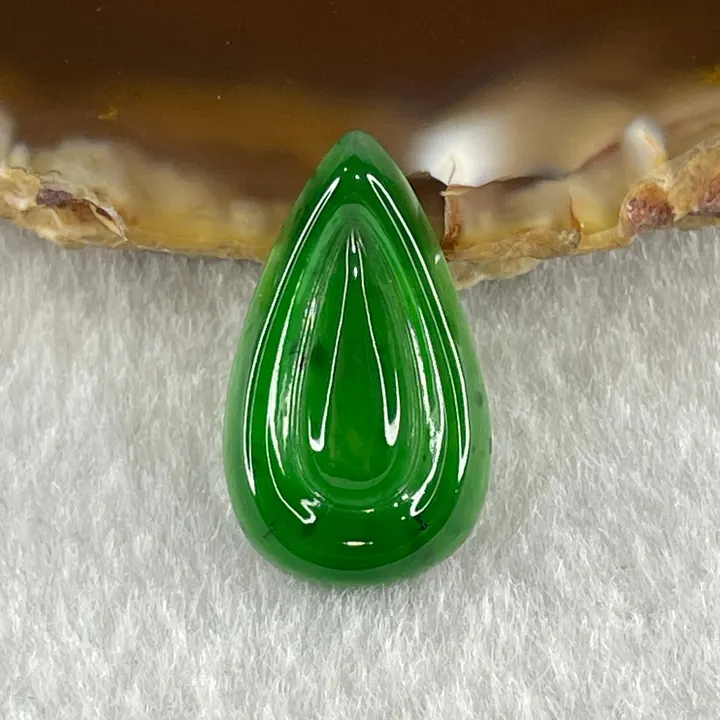

翡翠的水與色：透明度與綠色的交易
翡翠的價值，是「水」與「色」的一場交易——水好色淡、色濃水差，頂級貨是兩全其美的奇蹟。

核心定義
「水」是翡翠行話，指透明度與光澤的「潤度」——水頭足＝通透靈動，水頭差＝乾澀呆板；「色」指綠色（及其他顏色）的濃豔程度。翡翠的價值，就是水與色的函數：水好色佳者千金難求，兩者常難兩全。
「帝王綠」（imperial green）是綠色的最高形容：濃綠、正綠、飽和而不發黑——像祖母綠般的豔綠。帝王綠配上玻璃種，是翡翠世界的聖杯，價格以「億」為單位也時有所聞。
特徵與分類
| 組合 | 特徵 | 市場地位 |
|---|---|---|
| 玻璃種帝王綠 | 全透明＋濃綠 | 天價聖杯 |
| 冰種陽綠 | 半透明＋鮮綠 | 高端收藏 |
| 糯種帶翠 | 微透明＋帶綠 | 性價比主流 |
| 豆種滿綠 | 不透明＋滿綠 | 中低價 |
「色」的評價看四件事：正（色調正）、濃（飽和度高）、陽（明亮）、均（分布均勻）。帝王綠要四者皆備；偏黃綠、偏藍綠、發黑發灰者，等級遞減。
科學原理
「水」的物理是光在翡翠內部的穿透與反射：晶粒細密、裂隙少→光線通暢→水頭足；雜質與粗粒→光線散射→水頭差。「色」的化學是鉻（鮮綠）與鐵（暗綠）：鉻含量適中且均勻→帝王綠；鐵多→發暗。
水與色的矛盾來自「致色與結構」的平衡：鉻離子多→色濃，但鉻的進入常伴隨晶體結構變化→可能影響透明度。地質上「又透又綠」需要極苛刻的條件——這就是它稀有的本質。
鑑定與鑑別方法
- 透光看水頭：水足則通透
- 自然光看色：正濃陽均
- 對照色標樣本（商業用色板）
- 顯微鏡查裂隙與結構
- 證書確認：翡翠＋種水色商業描述
市場行情與保養建議
行情規律：先看種水，再看色——同種水，色差一級價格差數倍；同色，種差一級亦然。近年市場「種水派」與「色派」並存：年輕人偏種水、傳統藏家偏色。
選購建議：預算內求平衡——「糯種滿綠」與「冰種無色」是兩條常見路線；追求投資，玻璃種帝王綠與冰種陽綠是硬通貨。
常見誤區
綠色要看「正濃陽均」四要素，發黑發灰的「深綠」反而掉價。同樣濃綠，種水差價格天差地遠——綠不是唯一標準。
無色的玻璃種價格遠低於帶翠的冰種——市場對「色」有基本要求。水與色是雙軸，單極端都到不了頂峰。
冷知識
它是商業形容詞，沒有統一國際標準——不同商家口中的「帝王綠」可能差很多。看懂色，比記住名詞重要。
佩戴久了，人體油脂滲入讓顏色「活」起來、更溫潤——「玉養人」的對面，是「人養玉」的物理潤養。
反直覺觀點
帝王綠是「濃而不黑」的豔綠，不是深到發黑的綠。過深的綠會壓低水頭——頂級翡翠的綠，是「點到為止」的藝術。
當種水到頂（玻璃種），結構之美足以碾壓「色」——這告訴我們，翡翠的價格公式裡，「種」的權重高得驚人。